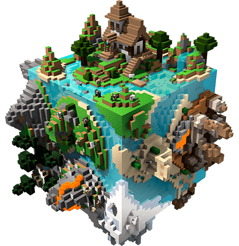
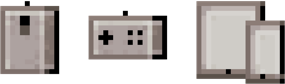

深吸一口气，潜入水面下生机勃勃的活力新世界！琳琅满目的海洋生物、全新怪物和五彩缤纷的海洋景观，Minecraft的海洋将迎来史上最大的一次更新！Overworld的海洋中既有鱼儿也有坏蛋。其中一些会攻击你，而其他则会成为你的好伙伴！跟海豚一起嬉戏，与大海龟结伴同游，或者与充满敌意的Drowned搏斗。如果你浮上水面换气，当心在空中游弋的Phantom！
德国的Castcrafter，意大利的Kendal，日本的ashiato，台湾的Kouki，巴西的AM3NIC，法国的Aypierre以及墨西哥的Elmayo97都会实时转播整场录像！他们将会在转播中用各自的母语（可能包括您的母语）进行评论，帮助全球尽可能多的玩家共享MINECON Earth盛会！
我们将通过互联网向全世界直播！ 时长大约会有90分钟，充满了丰富的Minecraft内容，并将包括前后制作花絮，以及一些讨论小组。
手机、平板电脑、个人电脑、游戏机！你可以在这个网站以及一些流媒体网站上观看！